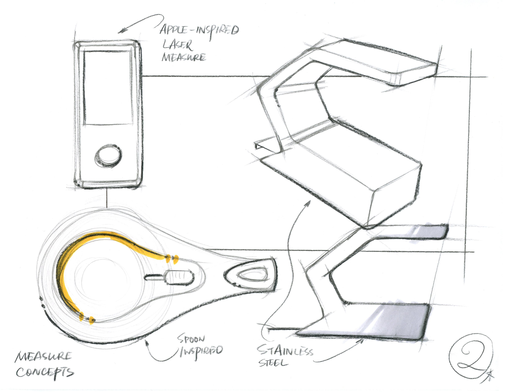
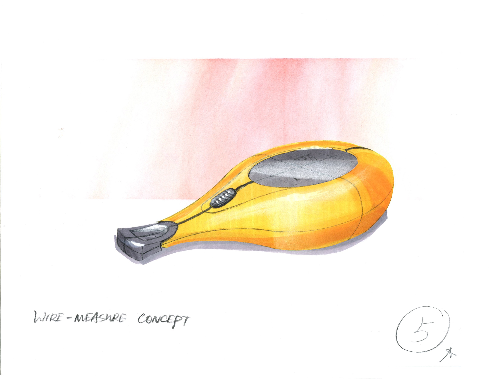
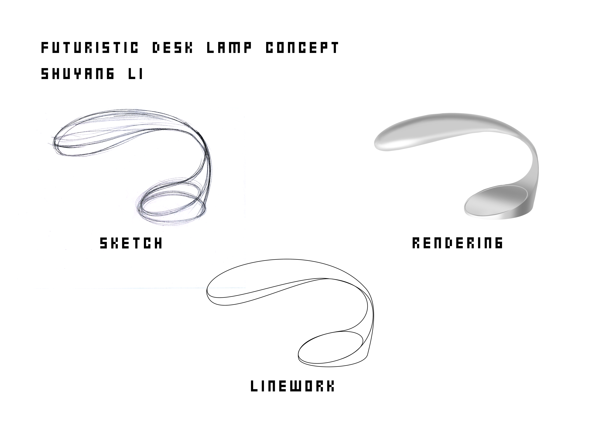
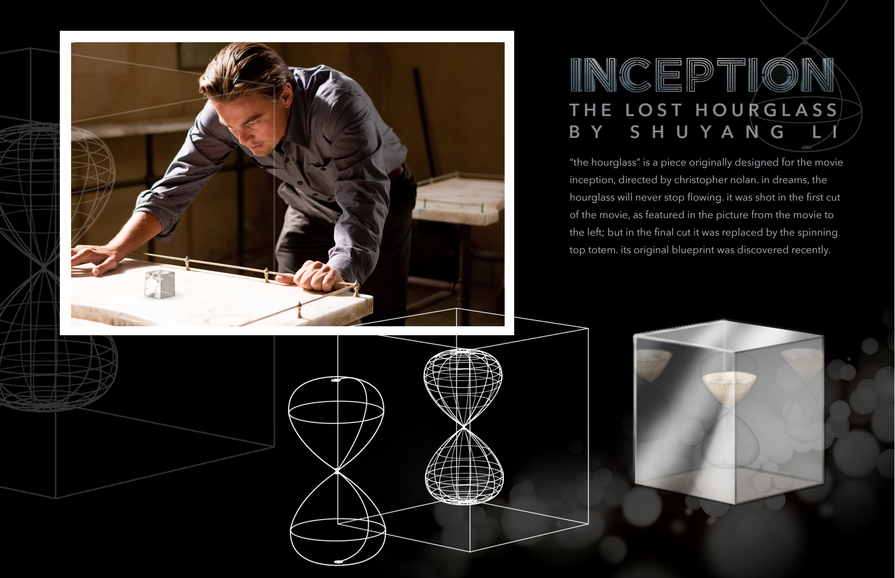
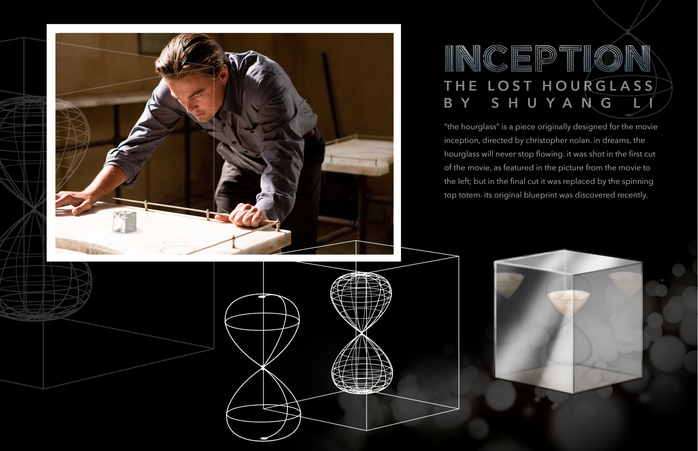

Sketching/Drawing
I had a lot of fun in our Design Drawing class at Notre Dame. It was a great experience to explore forms and learn sketching, drawing, and rendering at the same time.
I’ve never had formal drawing training before this class, and my growth is clearly visible.
 Concept sketches of a tape measure one month in  More developed marker rendering of a tape measure concept  Sketches and rendering of a lamp form Orthographic renderings of bottles in Photoshop
Orthographic renderings of bottles in Photoshop
 Rendering of a self-heating mug concept in Photoshop

Rendering of an hourglass
Rendering of a self-heating mug concept in Photoshop

Rendering of an hourglass